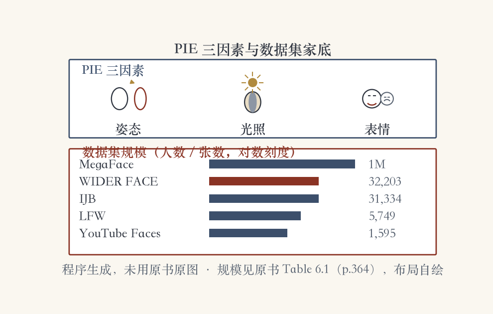
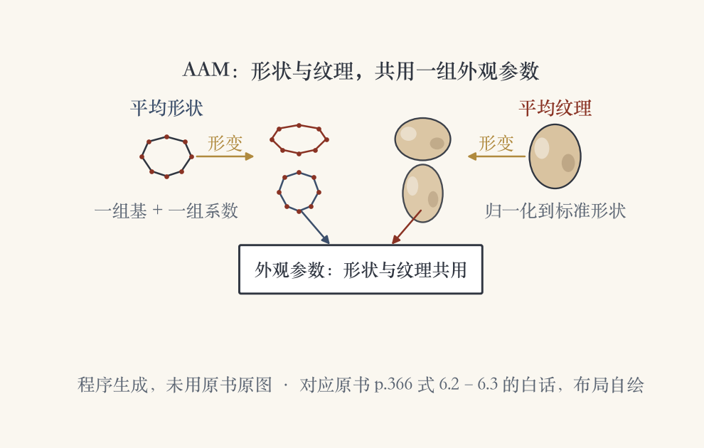
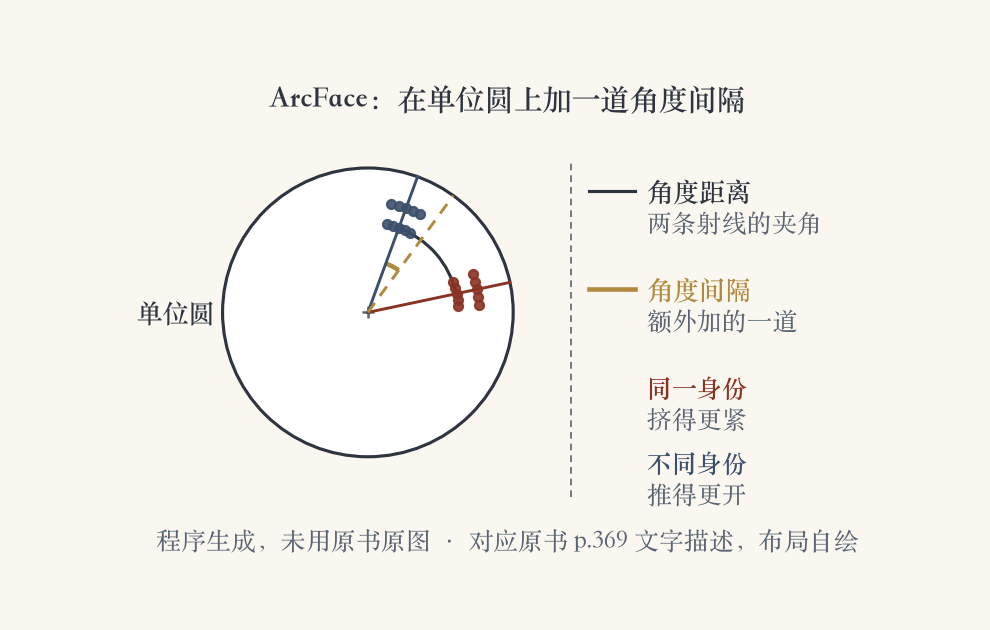

开场 · 人脸识别
机器最拿手的人脸识别
计算机的各种识别任务里，人脸识别最成功。
人认不熟的脸会吃力，机器在小圈子很稳。
从小圈子认人，已经走进消费级相册。
用途很多，也有被滥用的可能。
依据：原书第 363 页
本集路线
应用与滥用
PIE 与数据集
从特征点到 ArcFace
正课第五十一集
01 / 16
应用 · 边界
用途很广，边界要清楚
人机交互、身份核验、桌面登录。
家长控制、病人监护也在用。
书上同一页提醒：可能被滥用。
用途越广，越要先问谁来管。
依据：原书第 363 页
五类用途
人机交互
身份核验、桌面登录
家长控制、病人监护
正课第五十一集
02 / 16
难点 · 数据集
姿态、光照、表情，合称 PIE
难点是姿态、光照、表情。
识别器要在宽范围的 PIE 下训练。
数据集从 LFW 一路涨到 WIDER FACE。
图里是五套数据集的规模阶梯。
依据：原书第 363–364 页；Table 6.1

PIE 三因素与五套数据集规模｜程序生成，未用教材或论文原图
正课第五十一集
03 / 16
早期路线
最早：量五官，学整体
最早找眼睛、鼻子、嘴巴的位置。
再量这些特征点之间的距离。
另一支把灰度图投到低维子空间。
这就是特征脸，也有人用 AAM。
依据：原书第 364 页
两条早期路线
特征点：量距离
特征脸：低维子空间
AAM：形状与外观一起建模
正课第五十一集
04 / 16
形状与纹理
只记脸色不够，形状也要算
长相和可辨识度，既靠形状也靠纹理。
特征脸抓住的主要是颜色和纹理。
头一转，姿态会干扰识别。
识别前要先把姿态影响扣掉。
依据：原书第 365 页
两半
形状：脸型与轮廓
纹理：颜色与明暗
侧脸时形状这一半更要紧
正课第五十一集
05 / 16
Rowland 实验
形状和颜色，两本账一起算
Rowland 和 Perrett 先手描五官轮廓。
用轮廓把每张脸校正到标准形状。
再分别看形状和颜色偏离平均脸多少。
两种变形都能对上年龄、性别。
依据：原书第 366 页
实验结论
形状和颜色都重要
只看颜色会丢信息
校正到标准形状再比较
正课第五十一集
06 / 16
建模工具
三件建模工具
主动形状模型：管形状怎么变。
三维形变模型：建整张脸的三维结构。
弹性束图匹配：局部响应绑形状模型。
三件工具后来都很常用。
依据：原书第 366 页
各管什么
ASM：轮廓点怎么摆
3DMM：给脸加深度
EBGM：关键点周围的小网
正课第五十一集
07 / 16
AAM · 双通道
AAM：形状和纹理一起动
AAM 同时建模形状和纹理的变化。
纹理先归一化到标准形状再分析。
形状等于平均形状加形变。
纹理等于平均纹理加形变，共用参数。
依据：原书第 366 页（式 6.2–6.3 的白话）

AAM 双通道：平均形状与平均纹理汇入同一组外观参数｜程序生成，未用教材或论文原图
正课第五十一集
08 / 16
身份子空间
先把脸摆正，再谈认人
身份子空间把身份和干扰分开。
干扰包括光照、姿态、表情。
AAM 在识别里主要用来对齐。
三维形状模型对大幅转头更稳。
依据：原书第 366–367 页
怎么用
身份子空间：分开变化
对齐：摆到标准姿态
三维模型：单目或多视角视频
正课第五十一集
09 / 16
跟踪 · 前端化
前端化：先把侧脸掰正
三维 AAM 能估偏航、俯仰、翻滚。
估计结果套上可变形网格做跟踪。
DeepFace 用 6 个、后来 67 个基准点。
把侧脸掰正，裁成一张正脸。
依据：原书第 368 页
两步
跟踪：估三个角度
前端化：先去掉姿态
后面的比对才有意义
正课第五十一集
10 / 16
DeepFace
DeepFace：前端化加局部连接
架构从一张摆正的正脸开始。
若干局部连接层，卷积核可随位置变。
最后两层全连接，做 K 类 softmax。
深度网络从这里开始大规模奏效。
依据：原书第 368–369 页
流水线
前端化
局部连接层（非卷积）
两层全连接 + K 类 softmax
正课第五十一集
11 / 16
做减法
省掉前端化，改用数据增强
后来的系统干脆省掉前端化。
改用数据增强，合成更多姿态。
Masi 等人的教程梳理了全流程。
数据集、前端化、增强、损失都讲到。
依据：原书第 369 页
综述覆盖
训练集与测试集
前端化与数据增强
训练损失单列一节
正课第五十一集
12 / 16
损失 · 角度间隔
损失函数：把同一张脸挤紧
三元组损失学低维嵌入空间。
嵌入维度不随人数膨胀。
ArcFace 在单位超球面上量角度。
再加角度间隔，让同身份更紧。
依据：原书第 369–370 页

ArcFace 角度间隔：单位圆上两簇身份被挤紧、推开｜程序生成，未用教材或论文原图
正课第五十一集
13 / 16
个人相册
最先日用化的是相册
数码相机自动找脸，帮助对焦。
视频会议找脸，把镜头对准发言人。
相册和分享网站几乎都带人脸整理。
打标签方便日后找照片、自动分享。
依据：原书第 369 页
日常场景
相机：对焦
会议：居中
相册：打标签
正课第五十一集
14 / 16
难找的脸 · 上下文
脸难找时，就看人和场景
脸太小、转开、被挡住，都不好认。
人脸识别可以加上行人检测。
再加衣着识别，三样一起看。
位置、活动、事件等上下文也能帮忙。
依据：原书第 369–370 页
组合线索
脸 + 行人 + 衣着
位置 + 活动 + 事件
线索越多，身份越清楚
正课第五十一集
15 / 16
收束 · 下一集
先量点，再学形状，最后学嵌入
从量五官距离，到特征脸。
从 AAM 的形状纹理，到三维前端化。
DeepFace 与 ArcFace 用损失函数收口。
下一集：对象检测与人脸检测。
依据：原书第 370 页
一条主线
量点：特征点距离
学形状：AAM
学嵌入：DeepFace / ArcFace
正课第五十一集
16 / 16